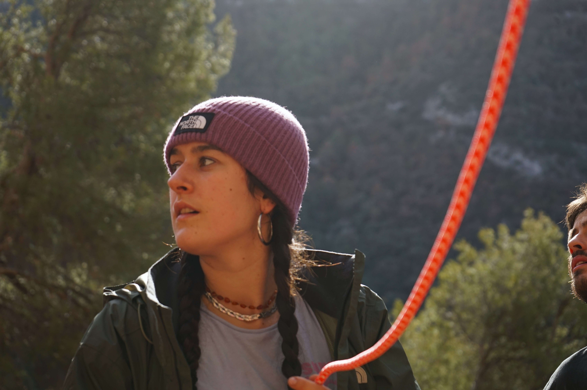
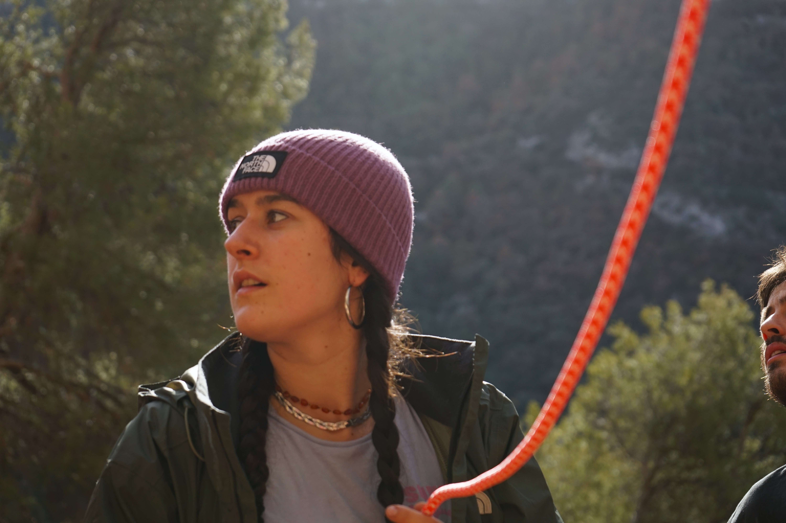

Tech
Descubre algunos de los proyectos técnicos que he desarrollado en el ámbito de las telecomunicaciones y administración de empresas.
Proyecto de Detección de Vehículos con YOLOv8 en la UPV
Este proyecto tiene como objetivo principal realizar un análisis
de video en tiempo real para detectar la entrada y salida de
vehículos en los accesos de la
Universidad Politécnica de Valencia (UPV) utilizando el
modelo YOLOv8. La implementación genera un archivo JSON
con información detallada sobre el tipo de vehículo, la
dirección (entrada/salida) y el registro horario de cada evento.
Además, el proyecto incluye la implementación en una
Raspberry Pi 4 Model B, utilizando su cámara integrada.
Esto requiere adaptar el algoritmo de detección para operar
eficientemente en hardware de recursos limitados, manteniendo la
precisión y fiabilidad en la detección. El trabajo no solo
configura el modelo YOLOv8 para el conteo de vehículos, sino que
también integra la infraestructura de la Raspberry Pi,
gestionando recursos, acceso a la cámara y salida de datos en
JSON.
Esta solución contribuye al desarrollo de sistemas de vigilancia
y control de acceso inteligentes, mejorando la
automatización y recopilación de datos para una
gestión eficiente y segura en entornos universitarios como la
UPV.